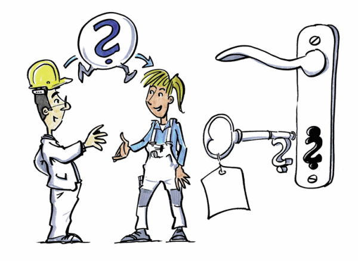

Miteinander reden – miteinander arbeiten
"Wer erfolgreich kommuniziert löst Probleme und Konflikte."
Ein Kommunikationstrainer.
Zuhören ist wichtiger als Reden!
Zuhören ist die Grundlage der Kommunikation.
Leider ist es viel schwerer zuzuhören, als es scheint:
Wenn wir nicht mit unserer ganzen Aufmerksamkeit
zuhören, dann werden die eigenen Gedanken zu dem,
was unser Gegenüber sagt, schnell interessanter,
als das was unser Gegenüber sagt.
Es gibt viele Abstufungen beim Zuhören. Vom
Warten darauf, dass mein Gegenüber Luft holt,
damit ich selbst weiterreden kann, bis zur hohen
Kunst des Zuhörens "das aktive Zuhören".
PRAXISTIPPS
- Wenn Sie zuhören, hören Sie nur zu.
- Tun Sie nichts nebenbei, nicht einmal in Gedanken!
- Wiederholen Sie, was sie verstanden haben – in eigenen Worten.
- Fragen Sie nach – möglichst mit offenen Fragen. Auch so entscheiden Sie, was Sie hören werden (mehr dazu im Kapitel "Wer fragt führt!").
- Fragen Sie nach, was Ihr Gegenüber verstanden hat.
- Wenn es Probleme mit der Verständigung gibt, bitten Sie Ihren Gesprächspartner mit eigenen Worten zu wiederholen, was er verstanden hat.
Wer fragt führt!
Offene Fragen sind der kürzeste Weg, um in den
Kopf Ihres Gegenübers zu kommen. Wenn Ihr
Gesprächspartner gewillt ist, über die Formulierung
einer Antwort auf Ihre Frage nachzudenken, dann
sind Sie "drin".
- Verwenden Sie Ihre Zeit für die Lösungen.
- Geeignet sind alle offenen Fragen, die nach dem Was, Wie, Wo und Wer fragen.
- Was bedeutet das für Sie?
- Was heißt das genau?
- Was ist Ihnen daran wichtig?
- Wie stellen Sie sich das vor?
- Woran denken Sie bei /wenn ... ?
- Was ist für Sie das Wichtigste?
- Was gibt es noch ...
|
Wenn es Sie interessiert "Warum" etwas passiert ist,
dann fragen Sie am besten:
- Was war vorher?
- Wie kam es dazu?
Fragen mit Wieso, Weshalb oder Warum sollten Sie
nicht stellen, da sie den Gesprächspartner dazu
bringen, dass er sein Handeln begründet und sich
verteidigt.
PRAXISTIPPS
- Überlegen Sie sich vor dem Gespräch, was Sie interessiert!
- Formulieren Sie sich Fragen vor und strukturieren Sie das Gespräch anhand der Fragen!
- Wenn Sie diese Fragen nutzen, sieht Ihr Gesprächspartner, dass Ihnen das Gespräch wichtig ist.
- Wenn Sie die vorbereiteten Fragen nicht nutzen, haben Sie dennoch das Gespräch "in der Vorstellung" schon etwas vorbereitet.
- Schaffen Sie die Basis für ein gutes Gespräch:
- Erinnern Sie sich an die positiven Seiten Ihres Gegenübers.
- Erinnern Sie sich an eine Situation, in der Sie gemeinsam etwas erreicht haben.
- Versetzen Sie sich selbst in eine gute Grundstimmung – erinnern Sie sich an schöne Momente, Erfolge und Kooperationen.
- Überlegen Sie sich für mögliche Schwierigkeiten eine gute Strategie.
- Bleiben Sie offen für eine gemeinsame Lösung.
